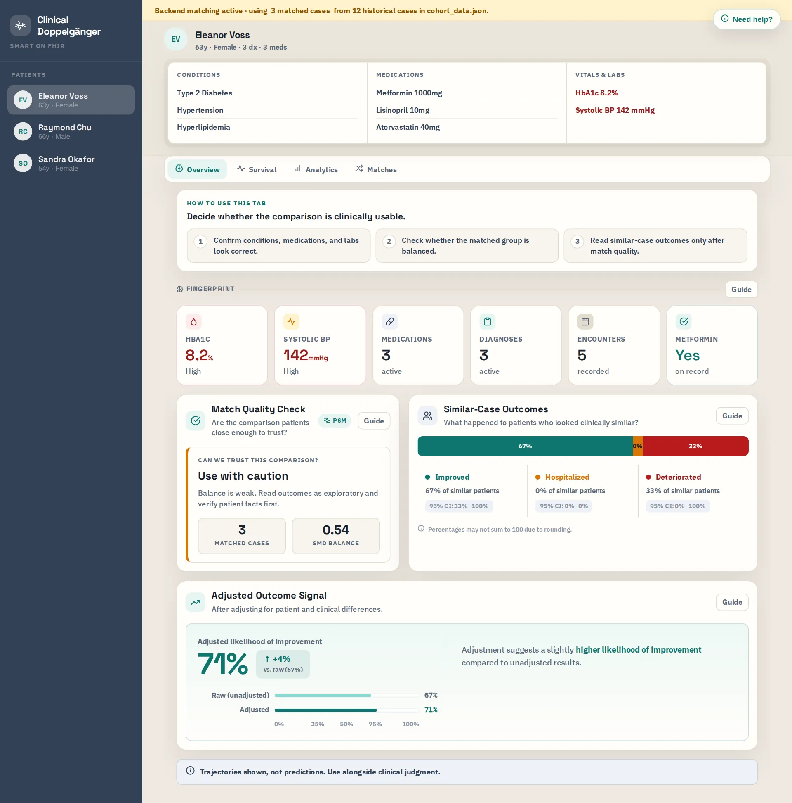
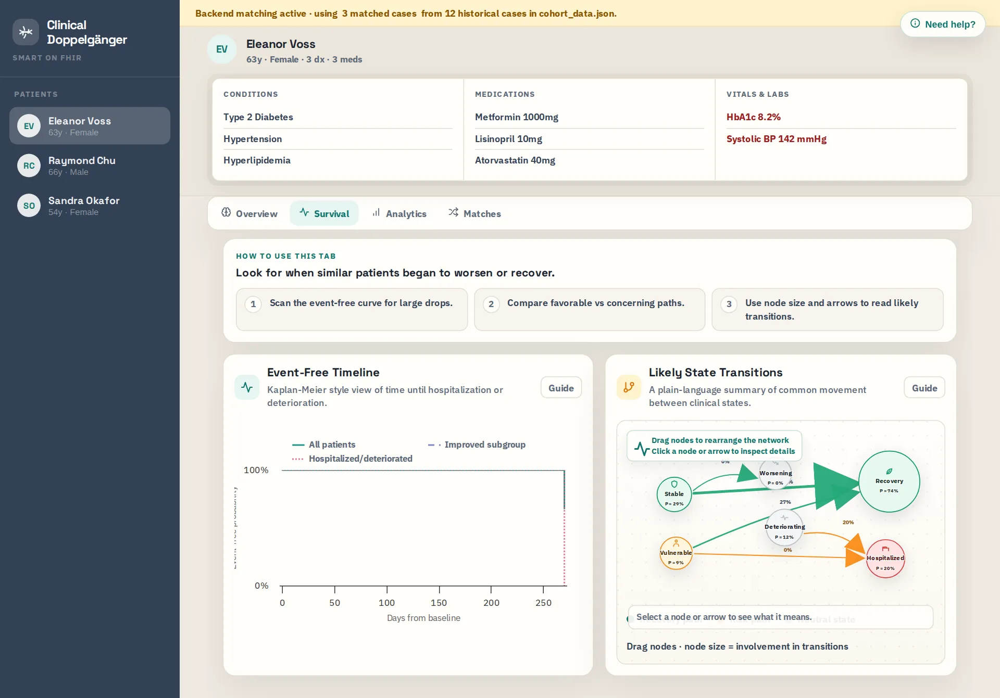
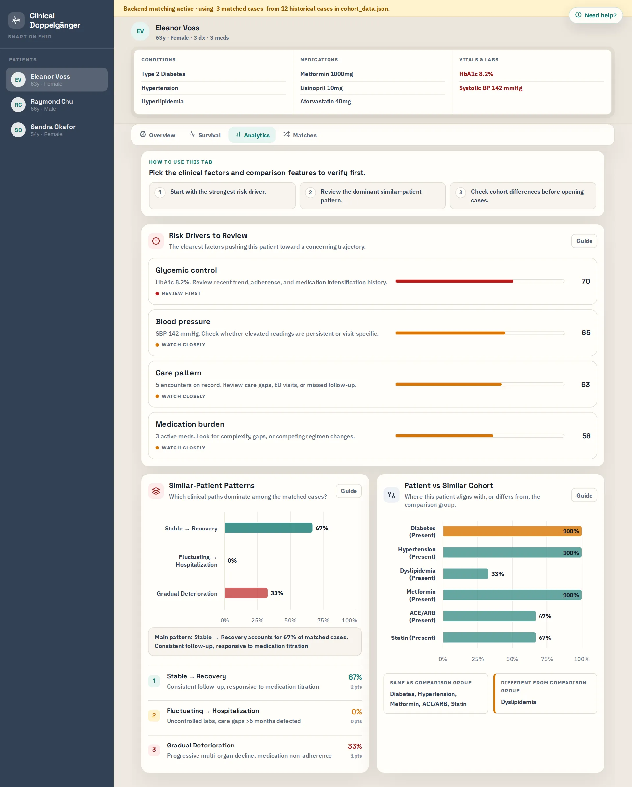
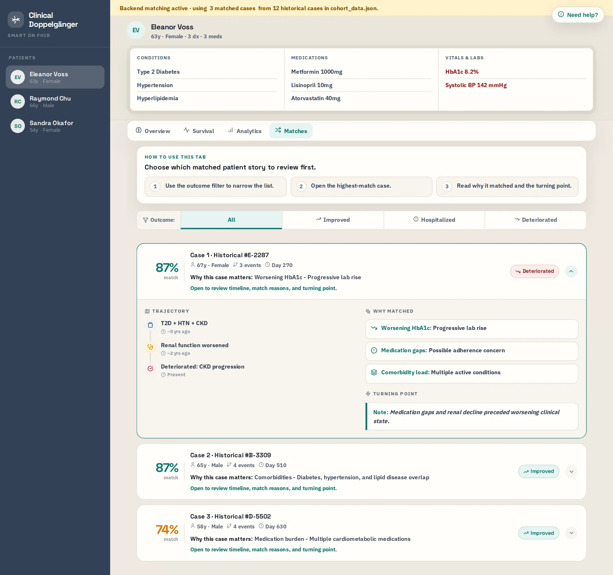

A SMART on FHIR decision-support app that finds clinically comparable patients, shows what happened to them over time, and exposes the evidence behind each recommendation.

Open the live app- Built at
- UNC Chapel Hill, Gillings School of Global Public Health
- When
- January to May 2026
- Authors
- Mia Zhou and Yutong Wu
- Stack
- SMART on FHIR, OAuth 2.0, Python, HTML and JavaScript
Clinicians reason by analogy. Most clinical AI reduces that to one score.
Clinical decision-making often relies on analogy: when clinicians face a difficult case, they naturally think about similar patients they have seen before, how those patients progressed, and which treatments or outcomes followed. Many clinical AI systems abstract that process into a single risk score, which can make the result difficult to interpret or trust.
I built Clinical Doppelgänger around a different idea: instead of only predicting an outcome, the system retrieves clinically comparable patients, shows what happened to them over time, and exposes the evidence behind each recommendation.
The problem it addresses: traditional dashboards show isolated data such as labs, medications, and diagnoses, but they do not always connect those data points to comparable patient outcomes.
- EHRStart from one patient chart.
- MatchFind past patients who looked clinically similar.
- OutcomeSee what happened next.
Walk through the app
These are screenshots of the running app. Pick a tab, then select a panel to spotlight it. The last tab runs the live app inside this page.
Check the comparison before you trust the outcome
Instead of returning only a point estimate, cohort-level predictions include bootstrap confidence intervals so users can see how stable or uncertain an estimate is.
The Overview's guide puts match quality first. You confirm the chart, check whether the matched group is balanced, and only then read what happened to similar patients.

See when similar patients changed course, not just where they ended up
I implemented Kaplan-Meier survival analysis to show how matched patients progressed longitudinally over time. Through the interactive dashboard, a clinician can inspect survival curves and compare outcome trajectories rather than relying on a single summary statistic.
I wanted the system to represent disease progression as a temporal process rather than a static classification problem, so I added a Markov state-transition model.

Decide which facts to verify first
This tab turns the matched cohort into a short review list: the clearest risk drivers, the dominant trajectories among similar patients, and where this patient differs from the comparison group.
It is built for checking the cohort before opening individual cases.

Every estimate traces back to real cases
Every prediction remains connected to the underlying matched cohort. Users can inspect which patients contributed to an estimate, whether the matched groups are reasonably balanced, how outcomes evolved over time, and how uncertainty changes across the cohort.
The system therefore acts less like a black-box classifier and more like an evidence-retrieval and reasoning layer built on top of the EHR.

Run it yourself
The hosted demo runs entirely in your browser. It opens with synthetic patients, and you can replay the built-in tour from the sidebar.
Without the Python matcher, the hosted version falls back to a small built-in cohort, so match counts differ from the screenshots in the other tabs.
Load the app in this page
This starts the real app. If the frame stays blank, your browser or this page's host is blocking embeds. Use "Open in a new tab" instead.
Screenshots were captured from the app with the Python matcher running against the 12-case simulated cohort. The patient shown, Eleanor Voss, is synthetic.
Design choices that keep the clinician in charge
- Match quality comes before outcomes
- The Overview tells you to check whether the matched group is balanced before you read what happened to similar patients.
- Weak evidence is labeled, not hidden
- When balance is poor, the app says "Use with caution" and tells you to read outcomes as exploratory.
- Uncertainty stays next to the outcomes
- Outcome percentages carry bootstrap confidence intervals, so a small cohort looks like a small cohort.
- Trajectories, not predictions
- The first-run tour calls it a reference tool for chart review, not a prediction engine, and the Overview repeats the reminder.
- Help lives where the question comes up
- A nine-step first-run tour, a "How to use this tab" strip on every tab, and a Guide button on each analysis panel.
- Every estimate stays tied to real cases
- The matched patients, why each one matched, and the turning point in their story are one tab away.
How it works
I developed the project at UNC Chapel Hill from January to May 2026 as an end-to-end clinical decision-support prototype integrating electronic health records, statistical matching, survival analysis, and longitudinal disease modeling.
From an engineering perspective, the project connected several components that are often treated separately: SMART on FHIR integration, OAuth 2.0 authentication, parallel clinical data ingestion, feature engineering, similarity search, propensity score matching, bootstrap inference, Kaplan-Meier survival analysis, Markov trajectory modeling, and interactive visualization. I built the frontend in HTML and JavaScript and the similarity-matching backend in Python.
1Get clinical data in, even when it is messy
The first challenge was accessing and organizing real clinical data. I implemented SMART on FHIR authentication using OAuth 2.0 and built a retrieval pipeline across multiple FHIR R4 resources, including Patient, Condition, MedicationRequest, Observation, and Encounter.
Rather than requesting each source sequentially, the system retrieves diagnoses, medications, laboratory results, procedures, and encounter histories in parallel to reduce dashboard latency. I also added defensive parsing and fallback logic because clinical records are rarely complete: observations may be missing, bundles may be empty, schemas can vary across resources, and API calls can fail midway through a workflow.
2Turn a chart into a fingerprint
Once the patient record is assembled, the system converts structured clinical information into a feature representation used to search for similar historical patients.
3Match on comparability, not just closeness
A naive nearest-neighbor approach initially produced matches that looked similar numerically but could differ substantially in baseline clinical risk. To address this, I combined cosine similarity with propensity score matching.
Cosine similarity identifies patients with comparable clinical feature patterns, while propensity-score adjustment helps balance important observed confounders across the comparison cohort. The goal was not simply to find the closest records, but to construct a cohort that was more clinically comparable before drawing conclusions from its outcomes.
What building it taught me
Similarity alone is not enough
A major challenge was recognizing that "similarity" alone is not enough in healthcare. Two patients may appear close in a feature space while differing in age, disease severity, treatment history, or other variables that strongly affect outcomes. That pushed me to think more carefully about confounding, cohort construction, and the distinction between finding nearby observations and identifying meaningful clinical comparators.
Reliability matters as much as the estimate
In many machine-learning applications, the model's prediction is treated as the final output. In clinical decision support, however, the reliability of that prediction can be just as important as the estimate itself. Adding bootstrap confidence intervals and cohort-level survival curves allowed the system to communicate both expected outcomes and how much confidence should be placed in them.
A patient's journey is a sequence
A binary outcome such as "hospitalized" or "not hospitalized" loses much of the structure of a patient's journey. By introducing state-transition modeling, I could represent progression as a sequence of possible states and transitions, which is much closer to how chronic disease actually unfolds.
What I am most proud of is that Clinical Doppelgänger connects the full workflow from raw EHR retrieval to interpretable clinical evidence.
A patient record enters through SMART on FHIR, is transformed into a structured feature representation, matched against a comparable cohort, evaluated using survival and uncertainty estimates, and then translated into an interactive view of possible clinical trajectories.
The project reinforced my interest in clinical AI and statistical modeling because it sits directly at the intersection of software infrastructure, causal-aware cohort design, survival analysis, and decision support. It also taught me that building useful healthcare AI is not only about improving predictive accuracy. A system also needs to handle messy clinical data, communicate uncertainty, remain transparent about how evidence was constructed, and give clinicians enough context to evaluate the recommendation for themselves.
What's next
The demo runs on a simulated cohort. Here is where I would take it next.
- Real longitudinal dataMove from simulated cohort JSON data toward real longitudinal hospital datasets.
- More modalitiesIncorporate physician notes, imaging, and laboratory time series.
- Flexible sequence modelsExplore more flexible sequential models such as hidden Markov models.
- Clinician feedbackLet users accept or reject proposed matched cohorts.
- Readable explanationsIntegrate retrieval-augmented summarization that converts cohort-level evidence into concise, physician-readable explanations.